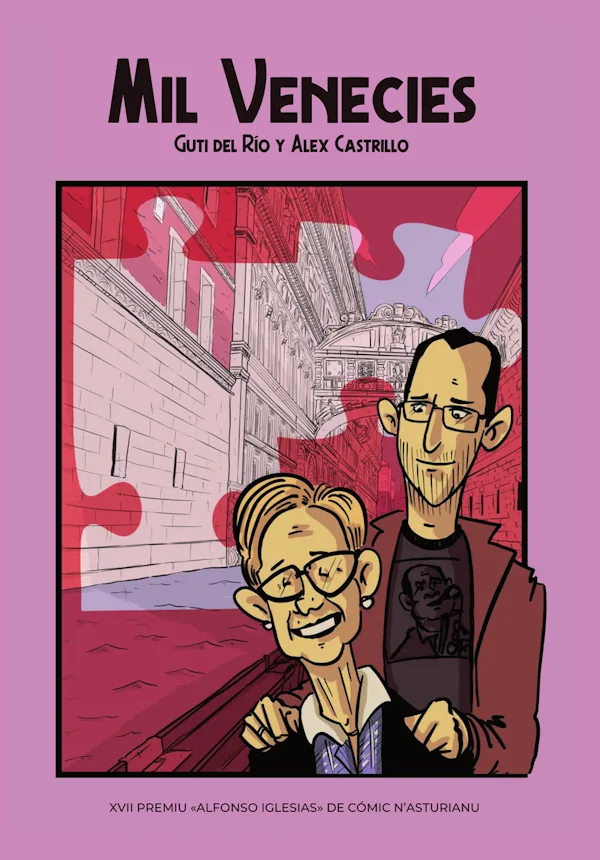
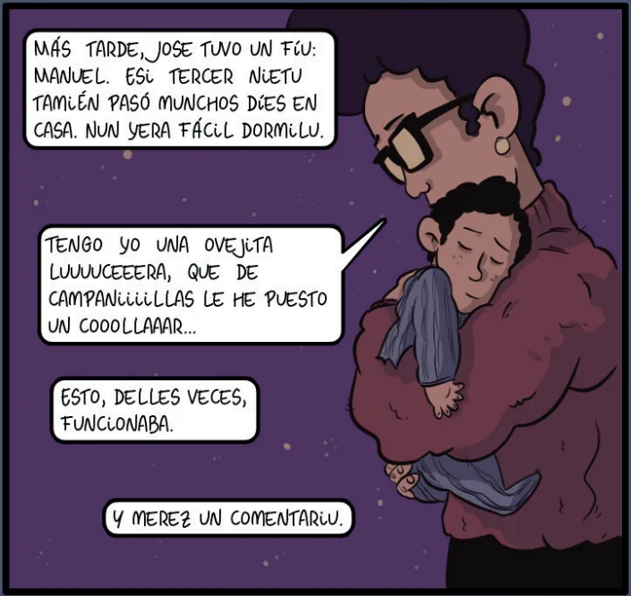
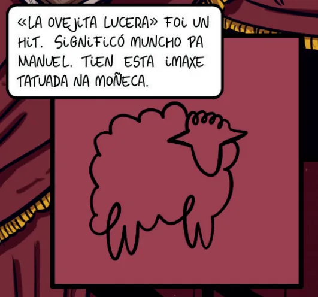
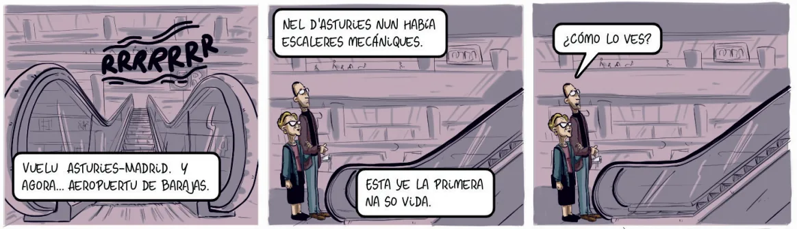

Tengo yo una ovejita lucera.

No sé cuánto tiempo llevo pensando en escribir sobre Mil Venecies. Este cómic, con guion de mi tío Guti y dibujo de mi primo Castri, cuenta la historia de nuestra abuela Olvido, la madre de Guti. Con él ganaron el XVII Premiu Alfonso Iglesias de Cómic n'asturianu (sí, está escrito en asturiano, pero os lo recomendaría igual aunque fuerais de Soria). Prepara los pañuelos, que esta reseña esta cargada de emociones.
Olvido era hija de la cuenca minera, una mujer de pueblo con muchos hermanos que tuvo que abrirse camino por sí misma. Es la historia de nuestra abuela, pero gran parte de su fuerza está en que también es la de tantas abuelas de otras personas, que se enfrentaron a una vida llena de complicaciones, en la que nunca fueron la prioridad de nadie (ni de ellas mismas), hasta que lograron salir adelante.
Abuelas que fueron el pilar de sus familias, que criaron a sus hijos haciendo malabares y a sus nietos como si fueran hijos. Todo lo que hiciera falta, siempre a costa de renunciar a su propia vida, para que nunca nos faltara de nada. Y sobre todo lo más importante: compañía y atención, casualmente lo que más extraño ahora que no está.

Las personas que me conocéis sabéis que siempre digo que me crio mi abuela, en el sentido de que pasé muchísimo tiempo con ella. Veranos, fines de semana, vacaciones de Navidad... Siempre que podía me escapaba a Mieres para estar con ella. Para mí era como una madre.
Cuando Castri me contó el proyecto me eché a temblar. Iba a ser una ilusión tremenda verlo publicado, pero a la vez sabía que me iba a doler mucho leerlo. Recuerdo cuando me pasó el PDF; fue una hora y media llorando sin parar. Tuve los ojos hinchados el resto del día.
Una parte era llorar de pena, porque los inicios fueron duros. Para ella y para tantas otras, pero eso formó parte de sus cimientos y de sus valores. Todo lo que fue transmitiendo a los demás nacía de ahí: "prubinos, que no les falte de nada, que ya me faltó a mí bastante". Prubinos (pobrecitos, en asturiano) era su palabra favorita.
La otra parte era llorar por lo mucho que la echo de menos y por lo mucho que me culpo de no haber estado más cerca. Iba a menudo con Emma para que la viera y estuvieran juntas, pero me pesa que no convivieran más (y yo con ellas).
El cómic tiene una calidez increíble. Es capaz de retratar los aspectos más oscuros de la época y llenarlos de luz, como hacía ella con su personalidad. El nivel de detalle que consigue Castri en los escenarios, pese a lo minimalista que puede llegar a ser en lo técnico, es asombroso.
En varias ocasiones tuve que parar de leer, además de para echar mano de los pañuelos, para hablar con él y decirle que las viñetas cobraban vida, que parecía estar viendo una animación. Tiene un lenguaje visual fortísimo, dinamismo puro, mucho más de lo que esperarías de un cómic sin escenas de acción.

La pluma de Guti no se queda atrás. Entre recuerdos, historia y vivencias se cuelan chascarrillos y guiños que solo pillamos en casa, pero que seguro que se parecen a los de muchas otras familias.
Yo mismo salgo en el libro, y también la canción que me cantaba para dormirme (no sin dificultad) y que nos acompañó siempre. Le encantaba seguir cantándola conmigo incluso cuando el grande ya era yo y era ella la que se acurrucaba a mi lado, en el sofá de su cocina o en la cama de la caravana del camping. Esa "ovejita lucera" formará parte siempre de mi vida y de mi piel.
Podría hablar de los viajes que dan nombre a la historia, pero prefiero que lo leáis por vosotras mismas y lo viváis desde vuestra propia mirada. Sé que no soy neutral, pero por suerte mucha gente de mi entorno lo ha leído y se ha quedado igual de prendada (mi malagueña favorita incluida ¡gracias Maica!). Si os apetece leerlo, lo tenéis en la ficha de Mil Venecies en Impronta.

Sé que no es una reseña al uso de un cómic, pero, ¡leches!, es que para mí tampoco es un libro cualquiera. Hay un pedazo de mí que ahora vive en la estantería y en el corazón de mucha gente, y eso ha sido posible gracias a la magia de Guti y Castri.
¿Qué pensaría ella si lo leyera? No me cabe duda: "Prubinos, muncho trabayaron".